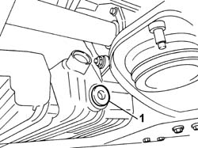
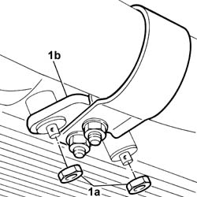
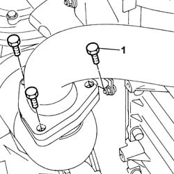
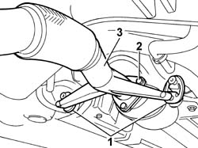
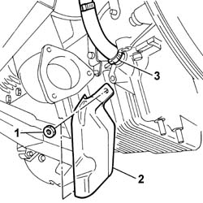
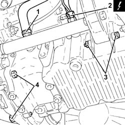
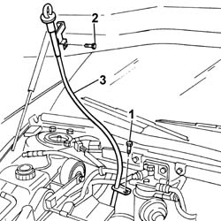
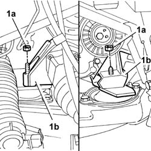
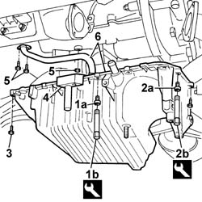
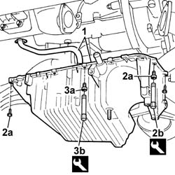

1020A20 CRANKCASE SUMP - R.R. clean contact surfaces and apply sealant
- Path
- Procedures > 10 ENGINE > 1020 CRANKCASE SUMP AND COVERS > 1020A CRANKCASE OIL SUMP > 1020A20 CRANKCASE SUMP - R.R. clean contact surfaces and apply sealant
- Kind
- repair procedure (removal / refitting; the operation number is the code)
- Applies to
- engines: 2.4 JTD 20V; all production periods
- Interactive page
- https://sloeber94.github.io/elrnDB-lThss/en/#/868228
Applies to: engines: 2.4 JTD 20V; all production periods
 Removing
Removing
 Refitting
Refitting- Disconnect the negative battery terminal.
- Position the vehicle on a lift.
See in Op. 7055B54 PROTECTION/GUARD under engine - R.R.
See in Op. 4450B04 Right FRONT WHEEL (one) - R.R.
See in Op. 7055B42 FRONT WHEEL ARCH LINER (one), left or right - R.R.
See in Op. 7055B64 Engine compartment DUST SEAL in front wheel arch (one), left or right - R.R.
See in Op. 1016A10 SOUND-PROOFING COVER - R.R.
See in Op. 7040D50 ENGINE COMPARTMENT UPPER SOUND INSULATION SHIELD - R.R.
See in Op. 1048B44 RIGID air supply PIPE from heat exchanger to intake manifold - R.R.
See in Op. 1048A56 UPPER RESONATOR - R.R.
See in Op. 1092G10 Engine components single drive BELT - R.R.
See in Op. 1092A10 Crankshaft PULLEY - R.R.
- Position a suitable container under the engine oil sump to collect the oil.
1. Loosen the engine oil sump drain plug

Applies to: engines: 2.4 JTD 20V; all production periods
- After having completely drained the engine oil, replace the plug gasket and retighten it to torque.
 | Value - daNm | Fastening | Component | Ø |
|---|---|---|---|---|
. | 2 | Plug | ENGINE OIL DRAIN PLUG | M18 X 1.5 |
1. Undo the nuts (1a) fixing the mounting bracket (1b) for the front section of the exhaust pipe.

Applies to: engines: 2.4 JTD 20V; all production periods
1. Undo the bolts fixing the front section of the exhaust pipe to the catalytic pre-converter.

Applies to: engines: 2.4 JTD 20V; all production periods
1. Remove the two flexible mountings for the front section of the exhaust pipe from the fastening pins.
2. Undo the catalytic converter fixing bolts.
3. Remove the front section of the exhaust pipe.
- Keep the gaskets for the front section of the exhaust pipe.

Applies to: engines: 2.4 JTD 20V; all production periods
1. Undo the retaining nuts.
2. Remove the metal protection.
3. Disconnect the turbocharger sump oil return pipe from the oil sump.

Applies to: engines: 2.4 JTD 20V; all production periods
1. Disconnect the sump oil vapour return pipe from the separator.
2. Disconnect the electrical connection for the sump engine oil level sensor.
 | Description | Connector |
|---|---|---|
2 | Engine oil level sensor | K032 |
3. Undo the bolts fixing the power unit/intermediate shaft rear support to the engine oil sump.
4. Undo the two bolts securing the oil sump to the gearbox.

Applies to: engines: 2.4 JTD 20V; all production periods
1. Undo the lower bolt securing the engine oil dipstick tube.
- Lower the vehicle.
2. Undo the upper retaining bolt
3. Remove the engine oil dipstick tube.

Applies to: engines: 2.4 JTD 20V; all production periods
- Position a hydraulic lift under the rigid front support.
1. UIndo the nuts (1a) fixing the rigid supports (1b) to the flexible mountings.
- Raise the power unit slightly.

Applies to: engines: 2.4 JTD 20V; all production periods
1. Undo the front and rear bolts (1b) fixing the crankcase sump using the spanner (1b).
 | Description | Code | Function |
|---|---|---|---|
1b | Spanner | 1.860.834.000 | Loosen/tighten front and rear crankcase sump bolts |
2. Undo the gearbox side bolts (2a) fixing the crankcase sump using the spanner (2b).
| Description | Code | Function |
|---|---|---|---|
2b | Spanner | 1.860.833.000 | Loosen/tighten crankcase sump side bolts |
3. Using a short hexagonal spanner available on the market, undo the timing side, side fixing bolts.
4. Cut the oil sump sealant using the special tool and lower the oil sump as far as possible.
| Description | Code | Function |
|---|---|---|---|
4 | Blade | 1.870.718.000 | Cutting engine oil sump sealant |
5. Undo the bolts and the nut fixing the engine oil intake.
6. Remove the crankcase sump together with the engine oil intake.

Applies to: engines: 2.4 JTD 20V; all production periods
Refitting
Removing- Clean the matching surfaces between the crankcase sump and the cylinder block/crankcase.
- Apply silicon sealant to the oil sump side and rear surfaces.
1. - Position the crankcase sump in its housing together with the intake with no axial deviation.
- Tighten the bolts and the nut fixing the engine oil intake.
- Apply silicon sealant to the oil sump front surface.
2. Tighten the side bolts (2a) fixing the crankcase sump to the recommended torque using the spanner (2b) (to be used for the gearbox side bolts only).
| Value - daNm | Fastening | Component | Ø |
|---|---|---|---|---|
2a | (side bolt) 0.9 | Bolt | OIL SUMP | M6 |
| Description | Code | Function |
|---|---|---|---|
2b | Spanner | 1.860.833.000 | Loosen/tighten crankcase sump side bolts |
3. Tighten the front and rear bolts (3a) fixing the crankcase sump to the recommended torque using the spanner (3b).
| Value - daNm | Fastening | Component | Ø |
|---|---|---|---|---|
3a | (front and rear bolts) 2.5 | Bolt | OIL SUMP | M8 |
| Description | Code | Function |
|---|---|---|---|
3b | Spanner | 1.860.834.000 | Loosen/tighten front and rear crankcase sump bolts |

Applies to: engines: 2.4 JTD 20V; all production periods
- Tighten the two bolts fixing the sump to the gearbox to torque.
| Value - daNm | Fastening | Component | Ø |
|---|---|---|---|---|
. | 8 | Bolt | MANUAL GEARBOX/DIFFERENTIAL | M12 X 1.25 |
| Value - daNm | Fastening | Component | Ø |
|---|---|---|---|---|
. | 5.5 | Bolt | MANUAL GEARBOX/DIFFERENTIAL | M10 X 1.25 |
- Tighten the bolts fixing the power unit/intermediate shaft rear support to the engine oil sump to the recommended torque.
| Value - daNm | Fastening | Component | Ø |
|---|---|---|---|---|
. | (on the crankcase sump) 2.5 | Nut | RIGID REAR SUPPORT POWER UNIT | M8 |
- Tighten the nut fixing the rear engine support to the mounting to torque.
| Value - daNm | Fastening | Component | Ø |
|---|---|---|---|---|
. | 4,5 | Nut | POWER UNIT REAR RIGID MOUNT | M10 X 1.25 |
- Tighten the nut fixing the engine air conditioning compressor/engine suport to torque.
| Value - daNm | Fastening | Component | Ø |
|---|---|---|---|---|
. | 4,5 | Nut | POWER UNIT RIGID TIMING MOUNT | M10 X 1.25 |
- Fit the engine oil dipstick pipe.
- Tighten the engine oil dipstick pipe lower fixing bolt to torque.
- Tighten the engine oil dipstick pipe upper fixing bolt to torque.
- Connect the sump oil vapour return pipe to the separator.
- Connect the electrical connection for the sump engine oil level sensor.
| Description | Connector |
|---|---|---|
. | Engine oil level sensor | K032 |
- Connect the turbocharger sump oil return pipe to the oil sump.
- Fit the metal protection and tighten the fixing nuts.
- Position the exhaust pipe gaskets.
- Position the front section of the exhaust pipe.
- Secure the pins to the rubber mountings.
- Tighten the bolts fixing the pipe to the catalytic converter.
- Tighten the bolts fixing the exhaust pipe to the catalytic pre-converter.
- Tighten the nuts fixing the mounting bracket for the front section of the exhaust pipe to the oil sump.
See in Op. 1092A10 Crankshaft PULLEY - R.R.
See in Op. 1092G10 Engine components single drive BELT - R.R.
See in Op. 1048A56 UPPER RESONATOR - R.R.
See in Op. 1048B44 RIGID air supply PIPE from heat exchanger to intake manifold - R.R.
See in Op. 7040D50 ENGINE COMPARTMENT UPPER SOUND INSULATION SHIELD - R.R.
See in Op. 1016A10 SOUND-PROOFING COVER - R.R.
See in Op. 7055B64 Engine compartment DUST SEAL in front wheel arch (one), left or right - R.R.
See in Op. 7055B42 FRONT WHEEL ARCH LINER (one), left or right - R.R.
See in Op. 4450B04 Right FRONT WHEEL (one) - R.R.
See in Op. 7055B54 PROTECTION/GUARD under engine - R.R.
- Fill the engine lubrication system as described in the operation:
See in Op. 0010T10 ENGINE OIL - Change
- Remove the vehicle from the lift.
- Connect the negative battery terminal.
Topics linked from this page (11)
- 0010T10 ENGINE OIL - Change
- 1016A10 SOUND-PROOFING COVER - R.R.
- 1048A56 UPPER RESONATOR - R.R.
- 1048B44 RIGID air supply PIPE from heat exchanger to intake manifold - R.R.
- 1092A10 Crankshaft PULLEY - R.R.
- 1092G10 Engine components single drive BELT - R.R.
- 4450B04 Right FRONT WHEEL (one) - R.R.
- 7040D50 ENGINE COMPARTMENT UPPER SOUND INSULATION SHIELD - R.R.
- 7055B42 FRONT WHEEL ARCH LINER (one), left or right - R.R.
- 7055B54 PROTECTION/GUARD under engine - R.R.
- 7055B64 Engine compartment DUST SEAL in front wheel arch (one), left or right - R.R.